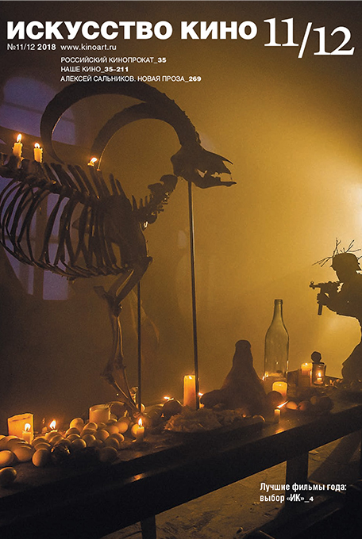

<!DOCTYPE html>
<html prefix="og: http://ogp.me/ns#">
  <head>
    <meta charset="utf-8"/>
    <meta name="viewport" content="width=device-width, initial-scale=1.0"/>
    <meta property="og:url" content="http://chernotrop.reviews/salnikov-1904"/>
    <meta property="og:type" content="article"/>
    <meta property="og:title" content="Алексей Сальников — Бенджамин Баттон современной прозы"/>
    <meta property="og:description" content="Если развернуть его публикации вспять, проглядывается логичный путь развития молодого писателя."/>
    <meta property="og:image" content="http://chernotrop.reviews/img/salnikov-1904-og.jpg"/>
    <meta property="og:image:width" content="1200"/>
    <meta property="og:image:height" content="600"/>
    <link href="https://fonts.googleapis.com/icon?family=Material+Icons" rel="stylesheet"/>
    <link rel="stylesheet"/><!-- Yandex.Metrika counter --> <script type="text/javascript" > (function(m,e,t,r,i,k,a){m[i]=m[i]||function(){(m[i].a=m[i].a||[]).push(arguments)}; m[i].l=1*new Date();k=e.createElement(t),a=e.getElementsByTagName(t)[0],k.async=1,k.src=r,a.parentNode.insertBefore(k,a)}) (window, document, "script", "https://mc.yandex.ru/metrika/tag.js", "ym"); ym(56951962, "init", { clickmap:true, trackLinks:true, accurateTrackBounce:true, webvisor:true, trackHash:true }); </script> <noscript><div></div></noscript> <!-- /Yandex.Metrika counter -->
    <title>Алексей Сальников — Бенджамин Баттон современной прозы</title>
  <link href="./css/style.bundle.css" rel="stylesheet"></head>
</html>
<body class="body_light">
  <header class="header header_dark">
    <div class="header__logo">
      <div class="logo logo_dark"><a class="logo__link" href="/">ЧЕРНОТРОП</a></div>
    </div>
    <nav class="header__menu"><a class="menu-item menu-item_active" href="index.html" target="blank">главная</a><a class="menu-item" href="features.html">рубрики</a><a class="menu-item" href="contacts.html">контакты</a><a class="menu-item" href="http://ttttt.me/blacktrope" target="blank">telegram-канал</a>
    </nav>
    <div class="header__menu_mobile" id="modeValue"><a href="menu.html">
        <svg xmlns="http://www.w3.org/2000/svg" width="24px" height="24px" viewBox="0 0 24 24">
          <path d="M0 0h24v24H0z" fill="none"></path>
          <path class="icon_white" d="M3 18h18v-2H3v2zm0-5h18v-2H3v2zm0-7v2h18V6H3z"></path>
        </svg></a>
    </div>
  </header>
  <article class="article">
    <div class="article__header">
      <h1 class="article__headline">Алексей Сальников — Бенджамин Баттон современной прозы</h1>
      <p class="article__description">Если развернуть его публикации вспять, проглядывается логичный путь развития молодого писателя.</p>
    </div>
    <div class="article__content">
      <div class="article__content-row">
        <div class="article__content-left">
          <p>Прочёл в самолёте рассказ Алексея Сальникова «На этом месте в 1904 году», опубликованный в свежем номере журнала «Искусство кино».</p>
          <p>Сюжет вполне себе реалистический. У Владимира умирает вторая жена. Бывшая супруга в типично-сальниковской манере помогает Владимиру пережить горе: привозит к двери его квартиры сына Никиту с вещами и отключает телефон. Владимир вынужденно берёт сына с собой в командировку, куда-то «в тайгу на пути от Екатеринбурга до Тюмени».</p>
          <p>На самом деле, рассказ не о Владимире. Сальников использует отца в качестве живого пролога и достаточно быстро переключается на Никиту, описывая летние каникулы двенадцатилетнего мальчика в компании слабослышащей девочки Вики и немца-ровесника Пауля. Рассказ напоминает коктейль из всевозможных трендов современной литературы: тут вам и регионализм, и присущая начинающим прозаикам тема детства, щепотка ностальгии, разбросанные по сюжету следы исторических потрясений двадцатого века. И всё, в общем-то, ладно скроено, написано фирменным языком с регулярными вкраплениями самоиронии — но на этот раз проза подчистую избавлена от мистической иррациональности.</p>
        </div>
        <div class="article__content-right">
          <figure>
            <figcaption>Номер «Искусста кино», в котором опубликлован рассказ.</figcaption>
          </figure>
        </div>
      </div>
      <div class="article__content-row">
        <div class="article__content-left">
          <p>Сальников, конечно, позволяет себе несколько нетипичных ходов. Например, провокационно легко сдаёт схему рассказа читателю в конце повествования (подробнее не опишу, боюсь заспойлерить). Но то ли редактор хорошо поработал, то ли Сальников прислушался к цокающей части критиков… проза его стала на порядок аккуратнее. Отдельные предложения и сюжет в целом уже не похожи на сбивчивый, нарочито-неотёсанный черновик. «Отделу» эта неотёсанность откровенно мешала, а вот «Петровым в гриппе», наоборот, служила тонким приёмом.</p>
          <p>После прочтения никак не отпускает мысль, что Алексей Сальников — Бенджамин Баттон современной прозы.</p>
          <p>Если развернуть его публикации вспять, проглядывается логичный путь развития молодого писателя: талантливый, тщательно выверенный и одновременно с этим скромный «На этом месте в 1904 году» перерастает в более уверенную «Историю про квартиру», где Сальников наращивает поверх реальности присущий ему бытовой мистицизм. Затем публикуется «Отдел» — неудачный эксперимент c гриппозным повествованием и стилистической шероховатостью, но первый крупный блин, как мы знаем, нередко выходит комом. Со второй попытки автор создаёт нашумевших «Петровых в гриппе»…</p>
          <p>Сальникову, конечно, идёт вся эта неразбериха и лёгкая творческая рассеянность, но как ни крути, что ни выдумывай — рано или поздно нужно написать что-то уровня «Петровых в гриппе». Кредит доверия не вечен. Даже у читателя. Даже у современного.</p>
          <div class="article-author">⚒︎<br/><a href="http://soshnikov-writing.art/" target="blank"><span>Артём Сошников</span></a></div>
          <div class="article-year"><span>Петроград</span>, <span>2019</span>
          </div>
        </div>
      </div>
    </div>
  </article>
<script type="text/javascript" src="./js/bundle.js"></script></body>